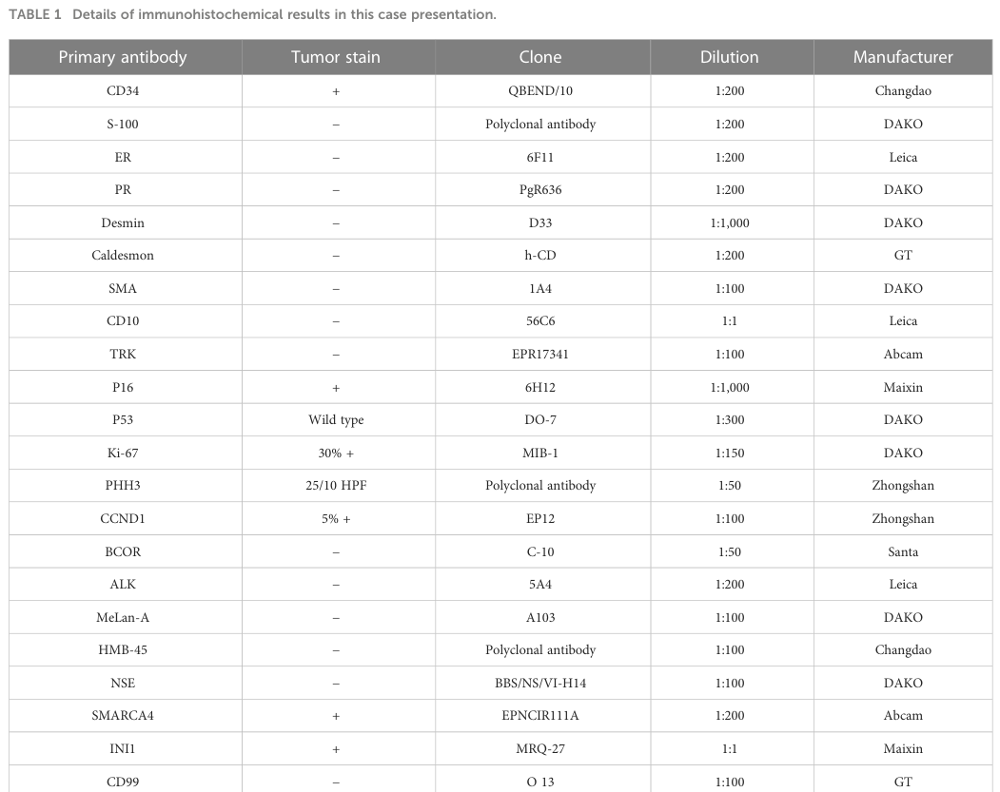

Sarcoma of the cervix uteri is a rare group of malignant mesenchymal tumors of the uterine cervix, accounting for well under 1% of all cervical malignancies. In contrast to the far more common cervical carcinomas (squamous cell carcinoma and adenocarcinoma), which arise from epithelium and are typically HPV-driven, cervical sarcomas arise from mesenchymal (stromal, smooth muscle, or skeletal muscle) elements. The major histologic subtypes are embryonal rhabdomyosarcoma (sarcoma botryoides), the most common cervical sarcoma in children and young women and characteristically associated with DICER1 alterations; cervical leiomyosarcoma, a genomically complex smooth-muscle malignancy driven by loss of major tumor suppressor pathways; and Mullerian adenosarcoma, a biphasic tumor with benign epithelium and a malignant low-grade stromal component whose prognosis is dominated by sarcomatous overgrowth. Because these tumors are biologically distinct from cervical carcinomas, they require sarcoma-specific pathologic classification and management. This entry is scoped to the three classical, most frequent histologic subtypes; rarer molecularly-defined cervical mesenchymal entities (NTRK-rearranged spindle cell sarcoma, COL1A1::PDGFB fusion sarcoma, extraosseous Ewing sarcoma) are recognized but not modeled in detail here.
Ask a research question about Sarcoma Of Cervix Uteri. OpenScientist will conduct autonomous deep research using the Disorder Mechanisms Knowledge Base and PubMed literature (typically 10-30 minutes).
Do not include personal health information in your question. Questions and results are cached in your browser's local storage.
name: Sarcoma Of Cervix Uteri
creation_date: '2026-06-17T00:00:00Z'
description: >-
Sarcoma of the cervix uteri is a rare group of malignant mesenchymal tumors of
the uterine cervix, accounting for well under 1% of all cervical malignancies.
In contrast to the far more common cervical carcinomas (squamous cell carcinoma
and adenocarcinoma), which arise from epithelium and are typically HPV-driven,
cervical sarcomas arise from mesenchymal (stromal, smooth muscle, or skeletal
muscle) elements. The major histologic subtypes are embryonal rhabdomyosarcoma
(sarcoma botryoides), the most common cervical sarcoma in children and young
women and characteristically associated with DICER1 alterations; cervical
leiomyosarcoma, a genomically complex smooth-muscle malignancy driven by loss
of major tumor suppressor pathways; and Mullerian adenosarcoma, a biphasic
tumor with benign epithelium and a malignant low-grade stromal component whose
prognosis is dominated by sarcomatous overgrowth. Because these tumors are
biologically distinct from cervical carcinomas, they require sarcoma-specific
pathologic classification and management. This entry is scoped to the three
classical, most frequent histologic subtypes; rarer molecularly-defined
cervical mesenchymal entities (NTRK-rearranged spindle cell sarcoma,
COL1A1::PDGFB fusion sarcoma, extraosseous Ewing sarcoma) are recognized but
not modeled in detail here.
categories:
- Gynecologic Cancer
- Sarcoma
parents:
- cervical cancer
- sarcoma
disease_term:
preferred_term: sarcoma of cervix uteri
term:
id: MONDO:0016280
label: sarcoma of cervix uteri
has_subtypes:
- name: Cervical ERMS
display_name: Cervical Embryonal Rhabdomyosarcoma (Sarcoma Botryoides)
description: >-
Embryonal rhabdomyosarcoma of the uterine cervix, the most common cervical
sarcoma in children and young women. Often presents as a polypoid
grape-like (botryoid) mass. Characteristically harbors somatic and frequently
germline DICER1 mutations, the latter indicating DICER1 syndrome.
subtype_term:
preferred_term: Embryonal Rhabdomyosarcoma
term:
id: NCIT:C8971
label: Embryonal Rhabdomyosarcoma
- name: Cervical Leiomyosarcoma
display_name: Leiomyosarcoma of the Cervix
description: >-
A malignant smooth-muscle tumor of the cervix. Genomically complex with
recurrent loss of TP53, RB1, PTEN, and ATRX pathways rather than a single
recurrent fusion. Aggressive with a tendency for hematogenous spread.
subtype_term:
preferred_term: Cervical Leiomyosarcoma
term:
id: NCIT:C128047
label: Cervical Leiomyosarcoma
- name: Cervical Adenosarcoma
display_name: Mullerian Adenosarcoma of the Cervix
description: >-
A biphasic Mullerian tumor composed of a benign epithelial component and a
malignant low-grade stromal (sarcomatous) component, with a characteristic
phyllodes-like leaflike architecture and periglandular stromal cuffing.
Prognosis is dominated by sarcomatous overgrowth and myometrial/deep stromal
invasion.
subtype_term:
preferred_term: Adenosarcoma
term:
id: NCIT:C9474
label: Adenosarcoma
pathophysiology:
- name: Mesenchymal Malignant Transformation
description: >-
Cervical sarcomas arise from malignant transformation of cervical mesenchymal
elements (smooth muscle, primitive skeletal muscle precursors, or
endometrial/cervical stroma) rather than from epithelium. This mesenchymal
origin distinguishes them from the epithelial cervical carcinomas and
underlies their divergent biology and treatment.
cell_types:
- preferred_term: mesenchymal stem cell
term:
id: CL:0000134
label: mesenchymal stem cell
biological_processes:
- preferred_term: cell population proliferation
modifier: INCREASED
term:
id: GO:0008283
label: cell population proliferation
evidence:
- reference: PMID:33135284
reference_title: "DICER1-associated embryonal rhabdomyosarcoma and adenosarcoma of the gynecologic tract: Pathology, molecular genetics, and indications for molecular testing."
supports: SUPPORT
evidence_source: HUMAN_CLINICAL
snippet: >-
Gynecologic sarcomas are uncommon neoplasms, the majority occurring in the
uterus.
explanation: >-
Supports the framing of cervical sarcomas as uncommon mesenchymal
neoplasms within the broader group of gynecologic (uterine) sarcomas.
downstream:
- target: DICER1 Loss of Function and miRNA Dysregulation
description: >-
In the embryonal rhabdomyosarcoma lineage, mesenchymal/myogenic precursor
transformation is driven by DICER1 microRNA-processing defects.
causal_link_type: INDIRECT_KNOWN_INTERMEDIATES
- target: Tumor Suppressor Loss and Genomic Complexity
description: >-
In the cervical leiomyosarcoma lineage, smooth-muscle transformation is
driven by loss of major tumor suppressor pathways.
causal_link_type: INDIRECT_KNOWN_INTERMEDIATES
- target: Sarcomatous Overgrowth in Adenosarcoma
description: >-
In the adenosarcoma lineage, malignant transformation is confined to the
stromal component, whose expansion (sarcomatous overgrowth) governs
aggressiveness.
causal_link_type: INDIRECT_KNOWN_INTERMEDIATES
- name: DICER1 Loss of Function and miRNA Dysregulation
description: >-
DICER1 is a highly conserved ribonuclease essential for microRNA biogenesis.
Somatic (and frequently germline) DICER1 mutations are the characteristic
molecular lesion of cervical/uterine embryonal rhabdomyosarcoma. Loss of
DICER1 function disrupts microRNA processing and the resulting post-
transcriptional gene-silencing programs, derepressing growth-promoting
targets and impairing myogenic differentiation of the rhabdomyoblastic
tumor cells. Germline DICER1 variants define the DICER1 hereditary cancer
predisposition syndrome.
cell_types:
- preferred_term: skeletal muscle myoblast
term:
id: CL:0000515
label: skeletal muscle myoblast
biological_processes:
- preferred_term: miRNA processing
modifier: DECREASED
term:
id: GO:0035196
label: miRNA processing
- preferred_term: miRNA-mediated post-transcriptional gene silencing
modifier: ABNORMAL
term:
id: GO:0035195
label: miRNA-mediated post-transcriptional gene silencing
evidence:
- reference: PMID:33135284
reference_title: "DICER1-associated embryonal rhabdomyosarcoma and adenosarcoma of the gynecologic tract: Pathology, molecular genetics, and indications for molecular testing."
supports: SUPPORT
evidence_source: HUMAN_CLINICAL
snippet: >-
DICER1 is a highly conserved ribonuclease crucial in the biogenesis of
microRNAs and mutations in DICER1 (either somatic or germline) have been
detected in a wide range of sarcomas including genitourinary embryonal
rhabdomyosarcomas (ERMS) and adenosarcomas.
explanation: >-
Directly supports DICER1 (a microRNA-biogenesis ribonuclease) loss-of-
function mutation as the characteristic molecular lesion of gynecologic
embryonal rhabdomyosarcoma.
- reference: PMID:31900434
reference_title: "Significantly greater prevalence of DICER1 alterations in uterine embryonal rhabdomyosarcoma compared to adenosarcoma."
supports: SUPPORT
evidence_source: HUMAN_CLINICAL
snippet: >-
We and others have reported that ERMS arising in the uterine cervix may
harbor mutations in the gene encoding the microRNA biogenesis enzyme,
DICER1
explanation: >-
Confirms that cervix-arising embryonal rhabdomyosarcoma harbors mutations
in the microRNA-biogenesis enzyme DICER1.
downstream:
- target: Impaired Myogenic Differentiation
description: >-
miRNA dysregulation derepresses proliferative programs and blocks terminal
rhabdomyoblastic (skeletal muscle) differentiation.
causal_link_type: DIRECT
- target: DICER1 Syndrome Predisposition
description: >-
When the DICER1 loss-of-function lesion is germline, it manifests as the
heritable DICER1 tumor-predisposition syndrome.
causal_link_type: INDIRECT_KNOWN_INTERMEDIATES
- name: Impaired Myogenic Differentiation
description: >-
In cervical embryonal rhabdomyosarcoma the tumor cells are arrested as
primitive rhabdomyoblasts that fail to complete terminal skeletal-muscle
differentiation, while continuing to proliferate. Myogenin expression is
often focal/variable, which can complicate diagnosis. This differentiation
block, together with sustained proliferation, produces the small round/spindled
rhabdomyoblastic tumor.
cell_types:
- preferred_term: skeletal muscle myoblast
term:
id: CL:0000515
label: skeletal muscle myoblast
biological_processes:
- preferred_term: skeletal muscle cell differentiation
modifier: DECREASED
term:
id: GO:0035914
label: skeletal muscle cell differentiation
- preferred_term: regulation of cell population proliferation
modifier: ABNORMAL
term:
id: GO:0042127
label: regulation of cell population proliferation
evidence:
- reference: PMID:37215607
reference_title: "DICER1 syndrome and embryonal rhabdomyosarcoma of the cervix: a case report and literature review."
supports: PARTIAL
evidence_source: HUMAN_CLINICAL
snippet: >-
a vaginal cervical mass, initially classified as a müllerian endocervical
polyp on negative myogenin immunostaining
explanation: >-
Illustrates that cervical ERMS rhabdomyoblasts may show negative/focal
myogenin immunostaining, consistent with an immature, incompletely
differentiated myogenic phenotype that can lead to initial misdiagnosis.
downstream:
- target: Local Tumor Growth and Invasion
description: >-
Proliferating, poorly differentiated rhabdomyoblasts form an enlarging
cervical mass that invades locally.
causal_link_type: DIRECT
- name: Tumor Suppressor Loss and Genomic Complexity
description: >-
Cervical leiomyosarcoma, like leiomyosarcoma at other sites, is a genomically
complex sarcoma defined by recurrent loss of major tumor-suppressor pathways
rather than a single recurrent fusion. Frequent alterations involve TP53,
RB1, PTEN, and ATRX, driving loss of cell-cycle and genome-stability control
in the malignant smooth-muscle cells.
cell_types:
- preferred_term: smooth muscle cell
term:
id: CL:0000192
label: smooth muscle cell
biological_processes:
- preferred_term: smooth muscle cell differentiation
modifier: ABNORMAL
term:
id: GO:0051145
label: smooth muscle cell differentiation
- preferred_term: cell population proliferation
modifier: INCREASED
term:
id: GO:0008283
label: cell population proliferation
evidence:
- reference: PMID:26541895
reference_title: "Targeted exome sequencing profiles genetic alterations in leiomyosarcoma."
supports: SUPPORT
evidence_source: HUMAN_CLINICAL
snippet: >-
Losses of chromosomal regions involving key tumor suppressor genes PTEN
(10q), RB1 (13q), CDH1 (16q), and TP53 (17p) were the most frequent
genetic events.
explanation: >-
Supports recurrent tumor-suppressor loss (PTEN, RB1, TP53) as the core
genomic feature of leiomyosarcoma, including the cervical site.
- reference: PMID:26692951
reference_title: "Targeted next-generation sequencing of cancer genes identified frequent TP53 and ATRX mutations in leiomyosarcoma."
supports: SUPPORT
evidence_source: HUMAN_CLINICAL
snippet: >-
In conclusion, we identified loss of function of the p53 and ATRX pathways
being the main mechanisms for leiomyosarcomas.
explanation: >-
Directly supports disruption of the TP53 and ATRX pathways as central
mechanisms in leiomyosarcoma.
downstream:
- target: Local Tumor Growth and Invasion
description: >-
Genomically unstable, proliferating malignant smooth-muscle cells form an
invasive cervical mass with metastatic potential.
causal_link_type: DIRECT
- name: Sarcomatous Overgrowth in Adenosarcoma
description: >-
Mullerian adenosarcoma is a biphasic tumor with a benign epithelial component
and a malignant low-grade stromal (sarcomatous) component, exhibiting a
leaflike phyllodes-like architecture with periglandular cuffing. A minority
of cases (~20%) harbor DICER1 alterations, overlapping with ERMS. Prognosis
is governed by sarcomatous overgrowth - expansion of the high-grade stromal
component beyond the biphasic pattern - and by depth of myometrial/stromal
invasion.
cell_types:
- preferred_term: fibroblast
term:
id: CL:0000057
label: fibroblast
biological_processes:
- preferred_term: cell population proliferation
modifier: INCREASED
term:
id: GO:0008283
label: cell population proliferation
evidence:
- reference: PMID:26927725
reference_title: "Uterine Adenosarcoma."
supports: SUPPORT
evidence_source: HUMAN_CLINICAL
snippet: >-
Müllerian adenosarcoma is an uncommon biphasic tumor composed of malignant
stromal and benign epithelial components.
explanation: >-
Directly supports the biphasic nature of adenosarcoma with a malignant
stromal and benign epithelial component.
- reference: PMID:26927725
reference_title: "Uterine Adenosarcoma."
supports: SUPPORT
evidence_source: HUMAN_CLINICAL
snippet: >-
it is important to assess for the presence of sarcomatous overgrowth and
myometrial invasion, which are the prognostic factors.
explanation: >-
Supports sarcomatous overgrowth and invasion as the key prognostic drivers
in adenosarcoma.
downstream:
- target: Local Tumor Growth and Invasion
description: >-
Sarcomatous overgrowth and deep stromal/myometrial invasion convert a
low-grade lesion into a locally aggressive, recurrence-prone tumor.
causal_link_type: DIRECT
- name: Local Tumor Growth and Invasion
description: >-
Regardless of subtype, the proliferating malignant mesenchymal cells form an
enlarging cervical mass that disrupts the cervical canal and invades local
structures, producing abnormal bleeding, a palpable/visible mass, and (in
botryoid ERMS) protruding polypoid tissue. Advanced disease can spread
locoregionally and, for leiomyosarcoma, hematogenously.
cell_types:
- preferred_term: mesenchymal stem cell
term:
id: CL:0000134
label: mesenchymal stem cell
biological_processes:
- preferred_term: cell population proliferation
modifier: INCREASED
term:
id: GO:0008283
label: cell population proliferation
evidence:
- reference: PMID:37215607
reference_title: "DICER1 syndrome and embryonal rhabdomyosarcoma of the cervix: a case report and literature review."
supports: SUPPORT
evidence_source: HUMAN_CLINICAL
snippet: >-
a prepubescent 9-year-old girl who was presented to our department for
metrorrhagias due to a vaginal cervical mass
explanation: >-
Supports local tumor growth presenting as a cervical mass causing abnormal
bleeding (metrorrhagia).
downstream:
- target: Cervical Mass
description: >-
The expanding malignant mesenchymal tumor is the cervical mass itself.
causal_link_type: DIRECT
- target: Abnormal Vaginal Bleeding
description: >-
Local tumor growth and surface ulceration of the cervical mass cause
abnormal vaginal bleeding.
causal_link_type: DIRECT
- name: DICER1 Syndrome Predisposition
description: >-
In the DICER1-associated embryonal rhabdomyosarcoma subtype, a germline
DICER1 loss-of-function variant produces a hereditary tumor-predisposition
syndrome (DICER1 syndrome) whose pleiotropic spectrum includes thyroid
disease (multinodular goiter, thyroid neoplasia) in patients and relatives.
cell_types:
- preferred_term: skeletal muscle myoblast
term:
id: CL:0000515
label: skeletal muscle myoblast
biological_processes:
- preferred_term: miRNA processing
modifier: DECREASED
term:
id: GO:0035196
label: miRNA processing
evidence:
- reference: PMID:33135284
reference_title: "DICER1-associated embryonal rhabdomyosarcoma and adenosarcoma of the gynecologic tract: Pathology, molecular genetics, and indications for molecular testing."
supports: SUPPORT
evidence_source: HUMAN_CLINICAL
snippet: >-
pathogenic germline variants in this gene cause a hereditary cancer
predisposition syndrome (DICER1 syndrome)
explanation: >-
Supports germline DICER1 variants as the basis of the DICER1
tumor-predisposition syndrome underlying the familial spectrum.
downstream:
- target: Thyroid Disease (DICER1 Syndrome)
description: >-
Germline DICER1 syndrome predisposes to thyroid disease as part of its
pleiotropic tumor spectrum.
causal_link_type: INDIRECT_KNOWN_INTERMEDIATES
phenotypes:
- category: Genitourinary
name: Abnormal Vaginal Bleeding
frequency: VERY_FREQUENT
diagnostic: true
description: >-
Abnormal vaginal bleeding (including postmenopausal, intermenstrual, or, in
children, prepubertal bleeding/metrorrhagia) is the most common presenting
symptom of cervical sarcoma.
phenotype_term:
preferred_term: Abnormal vaginal bleeding
term:
id: HP:0034263
label: Abnormal vaginal bleeding
evidence:
- reference: PMID:37215607
reference_title: "DICER1 syndrome and embryonal rhabdomyosarcoma of the cervix: a case report and literature review."
supports: SUPPORT
evidence_source: HUMAN_CLINICAL
snippet: >-
a prepubescent 9-year-old girl who was presented to our department for
metrorrhagias due to a vaginal cervical mass
explanation: >-
Documents abnormal vaginal bleeding (metrorrhagia) as the presenting
symptom of cervical embryonal rhabdomyosarcoma.
- category: Neoplasm
name: Cervical Mass
frequency: VERY_FREQUENT
diagnostic: true
description: >-
A cervical/vaginal mass is the characteristic finding; in botryoid embryonal
rhabdomyosarcoma it presents as a grape-like polypoid mass protruding from
the cervix. The mass is a malignant cervical neoplasm.
phenotype_term:
preferred_term: Cervix cancer
term:
id: HP:0030079
label: Cervix cancer
evidence:
- reference: PMID:37215607
reference_title: "DICER1 syndrome and embryonal rhabdomyosarcoma of the cervix: a case report and literature review."
supports: SUPPORT
evidence_source: HUMAN_CLINICAL
snippet: >-
a vaginal cervical mass, initially classified as a müllerian endocervical
polyp
explanation: >-
Documents a malignant cervical neoplasm (mass) as the presenting lesion of
cervical embryonal rhabdomyosarcoma.
- category: Endocrine
name: Thyroid Disease (DICER1 Syndrome)
description: >-
In DICER1-syndrome-associated cervical ERMS, affected individuals and
relatives may have thyroid disease (multinodular goiter, thyroid neoplasia)
as part of the DICER1 tumor-predisposition spectrum.
phenotype_term:
preferred_term: Goiter
term:
id: HP:0000853
label: Goiter
evidence:
- reference: PMID:37215607
reference_title: "DICER1 syndrome and embryonal rhabdomyosarcoma of the cervix: a case report and literature review."
supports: PARTIAL
evidence_source: HUMAN_CLINICAL
snippet: >-
The family history revealed thyroid diseases in the father, aunt and
paternal grandmother before the age of 20.
explanation: >-
Supports thyroid disease as part of the familial DICER1-syndrome spectrum
associated with cervical ERMS; goiter is the best available HP term for the
broader thyroid-disease phenotype.
histopathology:
- name: Embryonal Rhabdomyosarcoma
finding_term:
preferred_term: Embryonal Rhabdomyosarcoma
term:
id: NCIT:C8971
label: Embryonal Rhabdomyosarcoma
description: >-
Small round/spindle rhabdomyoblastic tumor; the botryoid variant shows a
polypoid grape-like growth with a subepithelial cambium layer.
evidence:
- reference: PMID:31900434
reference_title: "Significantly greater prevalence of DICER1 alterations in uterine embryonal rhabdomyosarcoma compared to adenosarcoma."
supports: SUPPORT
evidence_source: HUMAN_CLINICAL
snippet: >-
ERMS arising in the uterine cervix may harbor mutations in the gene
encoding the microRNA biogenesis enzyme, DICER1
explanation: >-
Confirms embryonal rhabdomyosarcoma as a histologic entity arising in the
uterine cervix.
- name: Cervical Leiomyosarcoma
finding_term:
preferred_term: Cervical Leiomyosarcoma
term:
id: NCIT:C128047
label: Cervical Leiomyosarcoma
description: >-
Malignant smooth-muscle tumor with fascicular spindle-cell architecture,
cytologic atypia, mitotic activity, and tumor cell necrosis.
evidence:
- reference: PMID:36114030
reference_title: "Uterine sarcomas and rare uterine mesenchymal tumors with malignant potential. Diagnostic guidelines of the French Sarcoma Group and the Rare Gynecological Tumors Group."
supports: SUPPORT
evidence_source: HUMAN_CLINICAL
snippet: >-
Leiomyosarcoma is the most common uterine sarcoma followed by endometrial
stromal sarcomas.
explanation: >-
Supports leiomyosarcoma as a recognized uterine (including cervical)
smooth-muscle sarcoma entity.
- name: Mullerian Adenosarcoma
finding_term:
preferred_term: Adenosarcoma
term:
id: NCIT:C9474
label: Adenosarcoma
description: >-
Biphasic tumor with benign glands and a malignant low-grade stromal
component, leaflike phyllodes-like architecture, and periglandular cuffing.
evidence:
- reference: PMID:26927725
reference_title: "Uterine Adenosarcoma."
supports: SUPPORT
evidence_source: HUMAN_CLINICAL
snippet: >-
Periglandular cuffing of the stromal cells around the compressed or
cystically dilated glands is characteristic.
explanation: >-
Directly supports the characteristic periglandular stromal cuffing of
Mullerian adenosarcoma.
genetic:
- name: DICER1
gene_term:
preferred_term: DICER1
term:
id: hgnc:17098
label: DICER1
association: Somatic and germline loss-of-function mutation
notes: >-
DICER1 mutations (somatic, and frequently germline) are characteristic of
cervical/uterine embryonal rhabdomyosarcoma; germline variants indicate
DICER1 syndrome and warrant referral to medical genetic services.
evidence:
- reference: PMID:33135284
reference_title: "DICER1-associated embryonal rhabdomyosarcoma and adenosarcoma of the gynecologic tract: Pathology, molecular genetics, and indications for molecular testing."
supports: SUPPORT
evidence_source: HUMAN_CLINICAL
snippet: >-
Given that germline pathogenic DICER1 variants are frequent in uterine
(corpus and cervix) ERMS and pathogenic germline variants in this gene
cause a hereditary cancer predisposition syndrome (DICER1 syndrome),
patients diagnosed with these neoplasms should be referred to medical
genetic services.
explanation: >-
Directly supports frequent germline DICER1 variants in cervical ERMS and
the indication for genetic referral.
- name: DICER1 in Adenosarcoma
gene_term:
preferred_term: DICER1
term:
id: hgnc:17098
label: DICER1
association: Somatic mutation in a subset
notes: >-
Approximately 20% of Mullerian adenosarcomas also harbor DICER1 alterations,
overlapping morphologically with ERMS.
evidence:
- reference: PMID:33135284
reference_title: "DICER1-associated embryonal rhabdomyosarcoma and adenosarcoma of the gynecologic tract: Pathology, molecular genetics, and indications for molecular testing."
supports: SUPPORT
evidence_source: HUMAN_CLINICAL
snippet: >-
almost all gynecologic ERMS reported (outside of the vagina) harbor DICER1
alterations, while approximately 20% of adenosarcomas also do so.
explanation: >-
Supports DICER1 alterations in a subset (~20%) of adenosarcomas, fewer than
in gynecologic ERMS.
- name: TP53 and ATRX (Leiomyosarcoma)
gene_term:
preferred_term: TP53
term:
id: hgnc:11998
label: TP53
association: Somatic mutation
notes: >-
Loss of function of the TP53 and ATRX pathways is a main driver of
leiomyosarcoma, including the cervical site.
evidence:
- reference: PMID:26692951
reference_title: "Targeted next-generation sequencing of cancer genes identified frequent TP53 and ATRX mutations in leiomyosarcoma."
supports: SUPPORT
evidence_source: HUMAN_CLINICAL
snippet: >-
We identified TP53 mutations in 19 of the 54 tumors (35%) and ATRX
mutations in 9 of the 54 tumors (17%).
explanation: >-
Provides direct evidence that TP53 and ATRX mutations are recurrent events
in leiomyosarcoma.
treatments:
- name: Surgical Resection
description: >-
Surgery is the mainstay of treatment for cervical sarcoma, ranging from
fertility-sparing local excision/trachelectomy (selected ERMS) to radical
hysterectomy, with the goal of complete tumor removal.
treatment_term:
preferred_term: surgical procedure
term:
id: MAXO:0000004
label: surgical procedure
notes: >-
Surgery as the mainstay of localized cervical-sarcoma management is a
well-established clinical standard; no quotable treatment-specific snippet
was available in the cited diagnostic references, so the claim is recorded
here rather than attached to a mismatched evidence item.
- name: Multi-Agent Chemotherapy
description: >-
For embryonal rhabdomyosarcoma, systemic chemotherapy with the VAC backbone
(vincristine, actinomycin D, cyclophosphamide) is standard, integrated with
local control. Chemotherapy regimens differ by subtype (sarcoma-type rather
than carcinoma-type protocols).
treatment_term:
preferred_term: chemotherapy
term:
id: MAXO:0000647
label: chemotherapy
therapeutic_agent:
- preferred_term: vincristine
term:
id: CHEBI:28445
label: vincristine
- preferred_term: actinomycin D
term:
id: CHEBI:27666
label: actinomycin D
- preferred_term: cyclophosphamide
term:
id: CHEBI:4027
label: cyclophosphamide
notes: >-
The VAC backbone (vincristine, actinomycin D, cyclophosphamide) as standard
systemic therapy for the embryonal rhabdomyosarcoma subtype is an
established clinical standard; no quotable VAC-specific snippet was
available in the cited references, so the claim is recorded here rather than
attached to a mismatched evidence item.
- name: Radiation Therapy
description: >-
Radiation therapy is used for local control in selected cases, particularly
for residual disease or unfavorable features after surgery.
treatment_term:
preferred_term: radiation therapy
term:
id: MAXO:0000014
label: radiation therapy
- name: Genetic Counseling
description: >-
Patients with cervical/uterine embryonal rhabdomyosarcoma should be referred
for genetic counseling and DICER1 testing given the high frequency of
germline DICER1 variants (DICER1 syndrome).
treatment_term:
preferred_term: genetic counseling
term:
id: MAXO:0000079
label: genetic counseling
evidence:
- reference: PMID:33135284
reference_title: "DICER1-associated embryonal rhabdomyosarcoma and adenosarcoma of the gynecologic tract: Pathology, molecular genetics, and indications for molecular testing."
supports: SUPPORT
evidence_source: HUMAN_CLINICAL
snippet: >-
patients diagnosed with these neoplasms should be referred to medical
genetic services.
explanation: >-
Directly supports referral to genetic services (counseling/testing) for
patients with cervical/uterine ERMS due to frequent germline DICER1
variants.
classifications:
icdo_morphology:
classification_value: Sarcoma
harrisons_chapter:
- classification_value: ONCOLOGY_HEMATOLOGY
references:
- reference: PMID:33135284
title: >-
DICER1-associated embryonal rhabdomyosarcoma and adenosarcoma of the
gynecologic tract: Pathology, molecular genetics, and indications for
molecular testing.
“Sarcoma of cervix uteri” is best treated as an umbrella disease concept covering multiple histologic and increasingly molecularly defined malignant mesenchymal tumors that arise primarily in the uterine cervix (rather than spreading from other sites). Contemporary reports emphasize that cervical sarcomas are very rare and their management often relies on small series/case reports and extrapolation from uterine/soft-tissue sarcoma practice (altmann2024fertilitysparingstrategyin pages 1-3, ghirardi2019roleofsurgery pages 9-10).
Most cervix-sarcoma knowledge is derived from aggregated disease-level resources (guidelines for uterine sarcoma) plus individual case reports/series for cervix-specific entities (raycoquard2024esgoeuracangcigguidelinesfor pages 2-3, yu2024clinicopathologiccharacteristicstreatment pages 1-2, xiao2024primaryewing’ssarcoma pages 1-2).
Cervical sarcomas are heterogeneous and include: - Fusion-driven sarcomas (e.g., NTRK fusions, COL1A1–PDGFB) (szalai2024ntrkrearrangedspindlecell pages 1-3, lu2023casereporta pages 6-7) - Oncogenic translocation-driven small round cell tumors (e.g., EWSR1–FLI1 in Ewing sarcoma) (xiao2024primaryewing’ssarcoma pages 1-2) - Predisposition-associated tumors (e.g., DICER1-associated cervical sarcoma, and literature linking DICER1 with cervical embryonal rhabdomyosarcoma) (altmann2024fertilitysparingstrategyin pages 1-3, yu2024clinicopathologiccharacteristicstreatment pages 1-2)
Evidence is limited for cervix-sarcoma-specific environmental risks. However, mechanistic “risk factors” in the sense of tumor-initiating genomic events are well described: - NTRK rearrangement defining an emerging subset of uterine/cervical sarcomas (szalai2024ntrkrearrangedspindlecell pages 1-3) - COL1A1–PDGFB fusion activating PDGFB/PDGFR signaling (lu2023casereporta pages 1-2) - DICER1 mutation in a reported cervical sarcoma case and a proposed DICER1-sarcoma entity (altmann2024fertilitysparingstrategyin pages 1-3)
No cervix-sarcoma-specific protective factors or gene–environment interactions were identified in the retrieved corpus.
Cervical sarcomas frequently present with bleeding and/or a cervical mass/polypoid lesion across subtypes: - Irregular vaginal bleeding (HPO: Abnormal uterine bleeding HP:0100602; Postcoital bleeding HP:0030828) is common in DICER1-associated cervical sarcoma and other subtypes (altmann2024fertilitysparingstrategyin pages 1-3, xiao2024primaryewing’ssarcoma pages 1-2). - Vaginal tissue prolapse / polypoid mass (HPO: Pelvic organ prolapse HP:0000139 as a proxy; Vaginal mass HP:0030448 as a proxy) is prominent in cervical rhabdomyosarcoma series (yu2024clinicopathologiccharacteristicstreatment pages 1-2). - Abdominal/pelvic pain (HPO: Abdominal pain HP:0002027) and urinary frequency (HPO: HP:0000018) were reported in cervical rhabdomyosarcoma series (yu2024clinicopathologiccharacteristicstreatment pages 1-2).
Direct QoL measures were not retrieved. Indirectly, heavy bleeding, prolapse/mass effect, radical surgery, and multi-agent chemotherapy imply substantial functional and reproductive impact (yu2024clinicopathologiccharacteristicstreatment pages 1-2, altmann2024fertilitysparingstrategyin pages 1-3).
Not specifically reported for cervix sarcoma in the retrieved evidence.
No cervix-sarcoma-specific environmental, lifestyle, or infectious causal agents were identified in the retrieved corpus.
Cervical sarcomas reflect distinct oncogenic mechanisms by subtype:
Suggested CL cell types (contextual): mesenchymal cell (CL:0000134); fibroblast (CL:0000057) (approximate, given fibrosarcoma-like morphology) (szalai2024ntrkrearrangedspindlecell pages 1-3).
COL1A1–PDGFB: fusion activates PDGFB signaling; conceptually upstream driver is ligand-driven PDGFR pathway activation (lu2023casereporta pages 1-2).
Guidelines for uterine sarcoma emphasize diagnostic uncertainty and recommend imaging plus careful pathology, often requiring resection specimen for definitive diagnosis: - Pelvic ultrasound and MRI are recommended as first-line imaging approaches in uterine sarcoma diagnostic pathways (perezfidalgo2023uterinesarcomasclinical pages 1-1, perezfidalgo2023uterinesarcomasclinical pages 1-3). - Biopsy may have low sensitivity, and diagnosis is often established after surgical specimen analysis (perezfidalgo2023uterinesarcomasclinical pages 1-1, perezfidalgo2023uterinesarcomasclinical pages 1-3).
Modern cervical sarcoma diagnosis increasingly requires molecular confirmation: - COL1A1–PDGFB fusion cervix/uterine sarcoma report: “confirmatory FISH or gene sequencing is mandatory in cases that are hard to identify” (lu2023casereporta pages 6-7). The retrieved tables summarize IHC and molecular detection across cases (lu2023casereporta media bf56b6c0, lu2023casereporta media 92e7e479). - NTRK-rearranged cervix spindle cell sarcoma: strong pan-TRK IHC and NGS-defined fusion; authors highlight importance of accurate diagnosis given targeted options (szalai2024ntrkrearrangedspindlecell pages 1-3). - Ewing sarcoma cervix: IHC (CD99, NKX2.2, FLI1), FISH for EWSR1 disruption, and NGS for EWSR1–FLI1 are central (xiao2024primaryewing’ssarcoma pages 1-2).
Because of rarity, treatment is largely multimodal and individualized, ideally in specialized centers.
ESGO/EURACAN/GCIG uterine sarcoma guidelines emphasize: - Centralization of care and multidisciplinary tumor boards - Use of molecular tests (FISH, DNA sequencing, RNA sequencing) with histology/IHC to refine classification and identify therapeutic targets - Encouragement of clinical trial enrollment and prospective registries (raycoquard2024esgoeuracangcigguidelinesfor pages 2-3).
No cervix-sarcoma-specific primary prevention strategies were identified. Secondary prevention is not established due to rarity; early evaluation of symptomatic bleeding/masses and avoidance of morcellation in suspected sarcoma contexts are relevant general principles (perezfidalgo2023uterinesarcomasclinical pages 1-3, lu2023casereporta pages 6-7).
No evidence retrieved.
No disease-specific animal models were retrieved in the current corpus.
The table below summarizes key subtypes, molecular features, diagnostics, and outcomes captured in the retrieved evidence.
| Entity / subtype | Typical presentation | Key molecular alteration(s) | Key diagnostic tests / IHC | Typical management approaches | Key quantitative / epidemiologic / prognostic data |
|---|---|---|---|---|---|
| Cervical rhabdomyosarcoma (mostly embryonal; rare pleomorphic) | Often adolescents/young women; vaginal bleeding, vaginal tissue prolapse, abdominal pain/urinary frequency; can mimic a cervical polyp (yu2024clinicopathologiccharacteristicstreatment pages 1-2) | DICER1 association reported in cervical ERMS; pathogenic DICER1 variation noted in literature/case reports (altmann2024fertilitysparingstrategyin pages 1-3) | MRI/CT/B-ultrasound used but nonspecific; RMS-marker IHC supportive of diagnosis (yu2024clinicopathologiccharacteristicstreatment pages 1-2) | Radical surgery or fertility-sparing conservative resection plus chemotherapy; management should be age- and fertility-tailored (yu2024clinicopathologiccharacteristicstreatment pages 1-2) | “Only 0.5% of primary RMSs are located in the cervix”; 12-case series age 15–50 years, median 17; 10/11 followed patients tumor-free (90.9%); median survival 91 months; 1/4 fertility-sparing patients conceived (25%) (yu2024clinicopathologiccharacteristicstreatment pages 1-2) |
| DICER1-associated cervical sarcoma | Irregular vaginal bleeding; exophytic cervical tumor in an 18-year-old (altmann2024fertilitysparingstrategyin pages 1-3) | DICER1 mutation; proposed distinct DICER1 sarcoma entity (altmann2024fertilitysparingstrategyin pages 1-3) | Histology with high mitotic activity; IHC: CD56+, calponin+, p53 wildtype, weak panCK <5%; CD34-, S100-, SMA-, desmin-, MyoD1-, caldesmon-, ER-, PR- (altmann2024fertilitysparingstrategyin pages 1-3) | Fertility preservation discussion, oocyte cryopreservation, local resection, doxorubicin + ifosfamide; radiation avoided to preserve fertility in reported case (altmann2024fertilitysparingstrategyin pages 1-3) | Primary cervical sarcomas estimated at ~1.3% of cervical tumors; carcinosarcoma ~50%, leiomyosarcoma/adenosarcoma next, remaining ~9% heterogeneous group; reported tumor 8.5 × 7 × 2.5 cm, Ki-67 90%, up to 15 mitoses/HPF; patient tumor-free at last follow-up (altmann2024fertilitysparingstrategyin pages 1-3) |
| Extraosseous Ewing sarcoma of the cervix | Vaginal bleeding with cervical mass; usually small round blue cell tumor presentation (xiao2024primaryewing’ssarcoma pages 1-2) | EWSR1–FLI1 fusion in most ES; case confirmed EWSR1–FLI1; EWS/FLI occurs in ~85% and other EWS–ETS fusions in ~15% of ESFT (xiao2024primaryewing’ssarcoma pages 1-2) | H&E small round blue cells; IHC positive CD99, NKX2.2, FLI1; FISH showing EWSR1 disruption; NGS confirming fusion; MRI and FDG-PET used (xiao2024primaryewing’ssarcoma pages 1-2) | Multimodal treatment: hysterectomy-based surgery plus adjuvant/induction chemotherapy, sometimes radiotherapy following ES paradigms (xiao2024primaryewing’ssarcoma pages 1-2) | ES is mostly osseous, with “only about 20% occurring outside the bone”; reported cervical tumor 2.5 × 2.1 × 1.8 cm; disease-free at 1 year in case report (xiao2024primaryewing’ssarcoma pages 1-2) |
| NTRK-rearranged spindle cell sarcoma / neoplasm of uterine cervix | Often pre/perimenopausal women with abnormal bleeding/menorrhagia or cervical polypoid mass; fibrosarcoma-like spindle cell tumor with cervical predilection (szalai2024ntrkrearrangedspindlecell pages 1-3, feng2025ntrkrearrangedspindlecell pages 1-2) | Recurrent NTRK fusions including TPM3::NTRK1, TFG-NTRK3, NUMA1::NTRK1; NTRK rearrangement drives constitutive Trk activation (szalai2024ntrkrearrangedspindlecell pages 1-3, feng2025ntrkrearrangedspindlecell pages 1-2) | Pan-TRK and CD34 usually diffuse positive; S100 may be negative in some cases; FISH and RNA/targeted NGS are emphasized as confirmatory tests (szalai2024ntrkrearrangedspindlecell pages 1-3, feng2025ntrkrearrangedspindlecell pages 1-2, lu2023casereporta pages 6-7) | Surgery is the initial treatment of choice; TRK inhibitors are important targeted options for recurrent/metastatic disease, and selective Trk inhibitors are specifically highlighted (szalai2024ntrkrearrangedspindlecell pages 1-3, feng2025ntrkrearrangedspindlecell pages 1-2) | Literature estimates vary: “less than 50” uterine NTRK-rearranged sarcomas described in one 2024 report; another review summarized 61 female-genital-tract cases (54 cervix, 7 corpus), mean age 39 years, mean tumor size 7.0 cm; NTRK1-fused tumors may present earlier and have more favorable outcomes (szalai2024ntrkrearrangedspindlecell pages 1-3, feng2025ntrkrearrangedspindlecell pages 1-2) |
| COL1A1–PDGFB fusion uterine sarcoma at cervix | Vaginal bleeding with cervical/vaginal mass; reported in older women including postmenopausal patients (lu2023casereporta pages 1-2) | COL1A1–PDGFB fusion activating PDGFB/PDGFRB signaling (lu2023casereporta pages 1-2) | RNA sequencing/NGS or FISH required for confirmation; IHC often CD34 positive, while TRK/S100/myogenic markers/hormone receptors often negative; differential includes leiomyoma, LMS, HGESS (lu2023casereporta pages 6-7, lu2023casereporta pages 1-2) | Surgery is standard in localized disease; early precise diagnosis may allow benefit from imatinib (lu2023casereporta pages 1-2, lu2023casereporta pages 6-7) | Only five prior uterine cases plus the reported additional case; reported ages 43–82 years (average 56.7, median 53.5); one imatinib-treated patient’s intra-abdominal mass shrank from 22.4 to 6.5 cm before progression at 14 months (lu2023casereporta pages 6-7) |
| Cervical leiomyosarcoma | Usually abnormal vaginal bleeding, often perimenopausal; rare cervical smooth muscle sarcoma (ghirardi2019roleofsurgery pages 9-10) | No single defining alteration summarized in retrieved cervix-specific evidence; generally considered part of complex uterine LMS biology (ghirardi2019roleofsurgery pages 9-10) | Pathology criteria suggested include ≥5 cm, infiltrative margins, ≥5 mitoses/10 HPF, and moderate–severe atypia; smooth muscle marker expression helps in differential diagnosis (ghirardi2019roleofsurgery pages 9-10, lu2023casereporta pages 6-7) | Complete surgical excision with negative margins is primary treatment; approaches in reports range from radical hysterectomy to trachelectomy/wide local excision; role of lymphadenectomy limited/uncertain (ghirardi2019roleofsurgery pages 9-10) | Described as “exceedingly rare”; lymphatic spread is low; prognosis favored by complete excision but overall optimal management remains uncertain because of rarity (ghirardi2019roleofsurgery pages 9-10) |
| Cervical adenosarcoma | Rare Müllerian adenosarcoma, sometimes asymptomatic or incidentally detected; may coexist with other cervical pathology (denschlag2022sarcomaofthe pages 3-4) | No specific recurrent cervical molecular alteration captured in retrieved recent evidence; uterine adenosarcoma classified as epithelial-mesenchymal tumor (denschlag2022sarcomaofthe pages 3-4) | Histopathology and IHC confirm diagnosis; awareness is important because preoperative CT/curettage and frozen section may miss malignancy (denschlag2022sarcomaofthe pages 3-4) | Hysterectomy ± bilateral adnexectomy in reported case; surgery remains main approach in early-stage disease (denschlag2022sarcomaofthe pages 3-4) | Rarely arises in cervix; case report emphasizes that diffuse growth in uterine cavity/cervical canal without symptoms is “even rarer”; patient recovered well after surgery with follow-up (denschlag2022sarcomaofthe pages 3-4) |
Table: This table summarizes the main cervical sarcoma subtypes identified in the retrieved evidence, focusing on presentation, molecular features, diagnostics, management, and quantitative findings. It is useful as a compact reference for comparing these rare entities and their actionable biomarkers.
References
(altmann2024fertilitysparingstrategyin pages 1-3): J. Altmann, K. Kubiak, J. Sehouli, and E. Roser. Fertility-sparing strategy in a rare case of highly malignant dicer-1-associated sarcoma of the cervix. Archives of Gynecology and Obstetrics, 310:2617-2621, Jul 2024. URL: https://doi.org/10.1007/s00404-024-07588-x, doi:10.1007/s00404-024-07588-x. This article has 0 citations and is from a peer-reviewed journal.
(ghirardi2019roleofsurgery pages 9-10): Valentina Ghirardi, Nicolò Bizzarri, Francesco Guida, Carmine Vascone, Barbara Costantini, Giovanni Scambia, and Anna Fagotti. Role of surgery in gynaecological sarcomas. Oncotarget, 10:2561-2575, Apr 2019. URL: https://doi.org/10.18632/oncotarget.26803, doi:10.18632/oncotarget.26803. This article has 34 citations.
(yu2024clinicopathologiccharacteristicstreatment pages 1-2): Xiuzhang Yu, Mingrong Qie, Liyan Huang, and Minmin Hou. Clinicopathologic characteristics, treatment, prognosis and pregnancy outcomes in rhabdomyosarcoma of the uterine cervix: a case series. Ginekologia polska, Dec 2024. URL: https://doi.org/10.5603/gpl.96919, doi:10.5603/gpl.96919. This article has 2 citations and is from a peer-reviewed journal.
(szalai2024ntrkrearrangedspindlecell pages 1-3): Luca Szalai, Ildikó Vereczkey, Marianna Szemes, András Rókusz, Erzsébet Csernák, Erika Tóth, and Zsombor Melegh. Ntrk-rearranged spindle cell sarcoma of the uterine cervix with a novel numa1::ntrk1 fusion. Virchows Archiv, 484:527-531, Dec 2024. URL: https://doi.org/10.1007/s00428-023-03724-1, doi:10.1007/s00428-023-03724-1. This article has 11 citations and is from a peer-reviewed journal.
(xiao2024primaryewing’ssarcoma pages 1-2): Yuhang Xiao, Yong Zhi, Guang-xu Cao, Heling Ma, Jinli Gao, and Fang Li. Primary ewing’s sarcoma of the uterine cervix: a case report and review of the literature. Journal of Cancer Research and Clinical Oncology, May 2024. URL: https://doi.org/10.1007/s00432-024-05698-2, doi:10.1007/s00432-024-05698-2. This article has 9 citations and is from a peer-reviewed journal.
(lu2023casereporta pages 6-7): Linghui Lu, Shunni Wang, Haoran Shen, Feiran Zhang, Fenghua Ma, Yue Shi, and Yan Ning. Case report: a case of col1a1–pdgfb fusion uterine sarcoma at cervix and insights into the clinical management of rare uterine sarcoma. Frontiers in Oncology, Mar 2023. URL: https://doi.org/10.3389/fonc.2023.1108586, doi:10.3389/fonc.2023.1108586. This article has 14 citations.
(raycoquard2024esgoeuracangcigguidelinesfor pages 2-3): Isabelle Ray-Coquard, Paolo Giovanni Casali, Sabrina Croce, Fiona M Fennessy, Daniela Fischerova, Robin Jones, Roberta Sanfilippo, Ignacio Zapardiel, Frédéric Amant, Jean-Yves Blay, Javier Martἰn-Broto, Antonio Casado, Sarah Chiang, Angelo Paolo Dei Tos, Rick Haas, Martee L Hensley, Peter Hohenberger, Jae-Weon Kim, Se Ik Kim, Mehmet Mutlu Meydanli, Patricia Pautier, Albiruni R Abdul Razak, Jalid Sehouli, Winan van Houdt, François Planchamp, and Michael Friedlander. Esgo/euracan/gcig guidelines for the management of patients with uterine sarcomas. Oct 2024. URL: https://doi.org/10.1136/ijgc-2024-005823, doi:10.1136/ijgc-2024-005823. This article has 57 citations and is from a peer-reviewed journal.
(lu2023casereporta pages 1-2): Linghui Lu, Shunni Wang, Haoran Shen, Feiran Zhang, Fenghua Ma, Yue Shi, and Yan Ning. Case report: a case of col1a1–pdgfb fusion uterine sarcoma at cervix and insights into the clinical management of rare uterine sarcoma. Frontiers in Oncology, Mar 2023. URL: https://doi.org/10.3389/fonc.2023.1108586, doi:10.3389/fonc.2023.1108586. This article has 14 citations.
(feng2025ntrkrearrangedspindlecell pages 1-2): Lulu Feng, Lei Li, Yan-mei He, and Wei Jiang. Ntrk-rearranged spindle cell neoplasm of the female genital tract: case report and literature review. Frontiers in Oncology, Aug 2025. URL: https://doi.org/10.3389/fonc.2025.1525722, doi:10.3389/fonc.2025.1525722. This article has 1 citations.
(lu2023casereporta media bf56b6c0): Linghui Lu, Shunni Wang, Haoran Shen, Feiran Zhang, Fenghua Ma, Yue Shi, and Yan Ning. Case report: a case of col1a1–pdgfb fusion uterine sarcoma at cervix and insights into the clinical management of rare uterine sarcoma. Frontiers in Oncology, Mar 2023. URL: https://doi.org/10.3389/fonc.2023.1108586, doi:10.3389/fonc.2023.1108586. This article has 14 citations.
(lu2023casereporta media 92e7e479): Linghui Lu, Shunni Wang, Haoran Shen, Feiran Zhang, Fenghua Ma, Yue Shi, and Yan Ning. Case report: a case of col1a1–pdgfb fusion uterine sarcoma at cervix and insights into the clinical management of rare uterine sarcoma. Frontiers in Oncology, Mar 2023. URL: https://doi.org/10.3389/fonc.2023.1108586, doi:10.3389/fonc.2023.1108586. This article has 14 citations.
(perezfidalgo2023uterinesarcomasclinical pages 1-1): Jose Alejandro Pérez-Fidalgo, Eugenia Ortega, Jordi Ponce, Andres Redondo, Isabel Sevilla, Claudia Valverde, Josep Isern Verdum, Enrique de Alava, Mar Galera López, Gloria Marquina, and Ana Sebio. Uterine sarcomas: clinical practice guidelines for diagnosis, treatment, and follow-up, by spanish group for research on sarcomas (geis). Therapeutic Advances in Medical Oncology, Jan 2023. URL: https://doi.org/10.1177/17588359231157645, doi:10.1177/17588359231157645. This article has 65 citations and is from a peer-reviewed journal.
(denschlag2022sarcomaofthe pages 3-4): Dominik Denschlag, Sven Ackermann, Marco Johannes Battista, Wolfgang Cremer, Gerlinde Egerer, Matthias Fehr, Markus Follmann, Heidemarie Haase, Philipp Harter, Simone Hettmer, Lars-Christian Horn, Ingolf Juhasz-Boess, Karin Kast, Günter Köhler, Thomas Kröncke, Katja Lindel, Peter Mallmann, Regine Meyer-Steinacker, Alexander Mustea, Edgar Petru, Peter Reichardt, Dietmar Schmidt, Hans-Georg Strauss, Falk Thiel, Uwe Andreas Ulrich, Thomas Vogl, Dirk Vordermark, Markus Wallwiener, Paul Gass, and Matthias W. Beckmann. Sarcoma of the uterus. guideline of the dggg, oeggg and sggg (s2k-level, awmf registry no. 015/074, april 2021). Geburtshilfe und Frauenheilkunde, 82:1337-1367, Dec 2022. URL: https://doi.org/10.1055/a-1897-5124, doi:10.1055/a-1897-5124. This article has 34 citations and is from a peer-reviewed journal.
(perezfidalgo2023uterinesarcomasclinical pages 1-3): Jose Alejandro Pérez-Fidalgo, Eugenia Ortega, Jordi Ponce, Andres Redondo, Isabel Sevilla, Claudia Valverde, Josep Isern Verdum, Enrique de Alava, Mar Galera López, Gloria Marquina, and Ana Sebio. Uterine sarcomas: clinical practice guidelines for diagnosis, treatment, and follow-up, by spanish group for research on sarcomas (geis). Therapeutic Advances in Medical Oncology, Jan 2023. URL: https://doi.org/10.1177/17588359231157645, doi:10.1177/17588359231157645. This article has 65 citations and is from a peer-reviewed journal.
